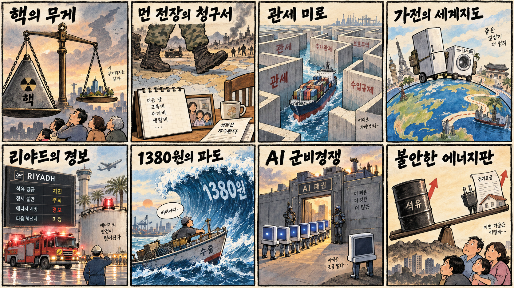
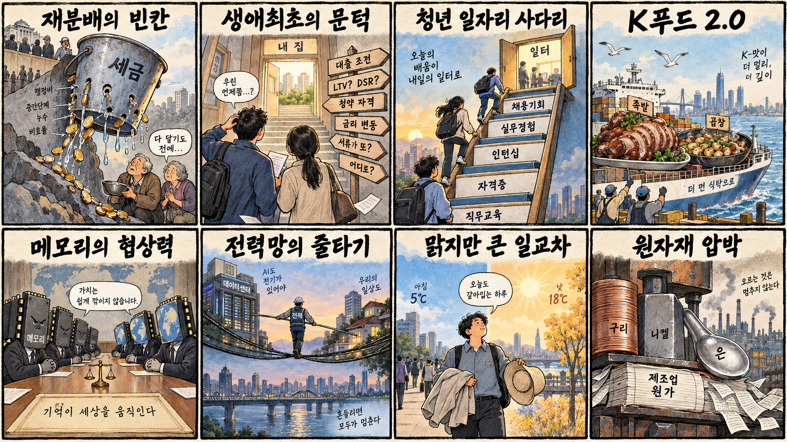

01
마이크로스트래티지 · 136.58→153.92달러 · +12.70%
내용요약 시가 대비 12.70% 급등하며 조사 종목 중 가장 강했습니다. 암호자산 연계주의 높은 베타가 두드러진 거래일입니다.
예상여파 기초자산 변동에 민감해 상승폭만 보고 추격하면 손실 위험이 큽니다.
MORNING_BRIEFING_20260920
작성 시각: 2026-09-20 06:37 KST · 직전 미국 정규장과 2026-09-20 KST 당일 공개 기사 기준
직전 미국 정규장인 9월 18일 뉴욕증시는 네 마녀의 날 변동성 속 다우 -0.18%, S&P 500 +0.17%, 나스닥 +0.40%로 혼조 마감했습니다. 필라델피아 반도체지수는 당일 보도 기준 2.78% 올라 메모리·장비주의 상대강도가 확인됐지만 대형 플랫폼과 보안주는 약했습니다. 월요일 한국 증시는 반도체 온기와 원·달러 1,380원대 부담이 맞설 가능성이 큽니다.
| 지수 | 종가 | 등락률 | 한국 증시 시사점 |
|---|---|---|---|
| 다우존스 | 51,682.64 | -0.18% | 지수 혼조 속 반도체 상대강도 확인 |
| S&P 500 | 7,650.50 | +0.17% | 지수 혼조 속 반도체 상대강도 확인 |
| 나스닥 종합 | 26,522.55 | +0.40% | 지수 혼조 속 반도체 상대강도 확인 |
지수는 소폭 올랐지만 종목별 차별화가 크게 나타났습니다.
메모리와 장비주가 미국 기술주 안에서 상대강도를 보였습니다.
금요일 6,894.23으로 급등해 월요일에는 과열과 연속성을 함께 봐야 합니다.
국내 증시 휴장으로 당일 시가 진입 기준을 설정하지 않습니다.
9월 18일 보고서는 수급·컨센서스·보정 표본·손익비 문턱을 동시에 통과한 후보가 없어 공식 추천을 내지 않았습니다. 게시 당시 판단을 유지하며 사후 종목을 추가하지 않습니다.
| 시장 | 종가 | 등락률 | 기준 |
|---|---|---|---|
| KOSPI | 6,894.23 | +2.66% | 9월 18일 · 시가 대비 +0.12% |
| KOSDAQ | 827.12 | +0.60% | 9월 18일 · 시가 대비 -0.67% |
| 다우존스 | 51,682.64 | -0.18% | 미국 9월 18일 정규장 |
| S&P 500 | 7,650.50 | +0.17% | 미국 9월 18일 정규장 |
| 나스닥 종합 | 26,522.55 | +0.40% | 미국 9월 18일 정규장 |
어플라이드 머티어리얼즈가 시가 대비 5.43% 상승했습니다.
마이크론이 시가 대비 3.16%, AMD가 2.27% 올랐습니다.
마이크로스트래티지와 코인베이스가 각각 12.70%, 9.03% 상승했습니다.
크라우드스트라이크 -3.78%, 메타 -3.32%로 약했습니다.
내용요약 시가 대비 12.70% 급등하며 조사 종목 중 가장 강했습니다. 암호자산 연계주의 높은 베타가 두드러진 거래일입니다.
예상여파 기초자산 변동에 민감해 상승폭만 보고 추격하면 손실 위험이 큽니다.
내용요약 시가 대비 9.03% 상승해 암호자산 거래 플랫폼주가 강세를 보였습니다.
예상여파 거래량과 규제 뉴스에 따라 변동성이 확대될 수 있습니다.
내용요약 시가 대비 5.43% 올라 필라델피아 반도체지수 강세와 방향을 같이했습니다.
예상여파 장비주의 반등이 국내 소부장으로 확산되는지는 월요일 수급 확인이 필요합니다.
내용요약 시가 대비 3.78% 하락해 지수 상승에도 사이버보안주는 약했습니다.
예상여파 성장주 내 자금 순환이 빨라 단일 거래일 약세를 구조적 추세로 단정하기 어렵습니다.
내용요약 시가 대비 3.32% 내려 대형 플랫폼 가운데 뚜렷한 약세를 기록했습니다.
예상여파 AI 투자비 부담과 플랫폼주 차익실현 민감도를 함께 점검할 필요가 있습니다.
한국 증시는 오늘 일요일 휴장입니다. 직전 거래일 KOSPI는 6,894.23로 전일 종가 대비 +2.66% 급등했고, 시가 대비로는 +0.12%였습니다. 월요일에는 미국 반도체지수 강세가 삼성전자·SK하이닉스와 장비주에 우호적일 수 있지만, KOSPI 급등 직후 과열과 원·달러 1,380원대 전망이 상단을 제약할 수 있습니다. 갭 상승 시 추격보다 개장 후 외국인 현물·선물 수급과 반도체 대형주의 전일 고점 지지 여부를 우선 확인합니다.
오늘은 추천 없음 — 현금 관망
오늘은 일요일로 국내 증시가 휴장해 당일 시가 진입 기준과 1일 예상 손익비를 설정할 수 없습니다. 전일까지의 외국인·기관 수급, 최신 컨센서스 변화, 30건 이상 유사 조건 보정 확률을 모두 검증한 후보도 없어 종합점수와 상승확률을 임의로 만들지 않습니다.
관심 연결종목 고용량 메모리·반도체 장비·전력망은 월요일 관찰 대상일 뿐 매수 추천이 아닙니다. 직전 급등 종목은 추격매수하지 않습니다.
일요일 중동·관세·환율 뉴스가 월요일 갭에 반영될 수 있습니다.
주간 37원 상승 뒤 추가 상승 여부와 외국인 수급을 봅니다.
미국 반도체지수 +2.78%가 국내 메모리·장비로 확산되는지 확인합니다.
금요일 급등 뒤 과열 소화와 전고점 지지 여부가 핵심입니다.
핵심 요약: AI 경쟁은 국방 조달, 메모리 직접 구매, 데이터센터 전력망, 피지컬 AI 인재로 빠르게 넓어지고 있습니다. 반도체 수요의 양적 성장과 함께 공급망·전력·정책 적합성이 실제 사업 성과를 가르는 단계입니다.
내용요약 미 국방부가 7개 기업과 인공지능 협약을 맺는 과정에서 앤트로픽이 제외됐다는 당일 보도입니다.
예상여파 공공 AI 조달에서 보안·정책 적합성이 모델 성능만큼 중요한 경쟁 조건으로 부상할 수 있습니다.
내용요약 AI 데이터센터 증가로 전력망 운영자들이 실시간 수요관리와 계통 신뢰성을 우선하고 있다는 조사 보도입니다.
예상여파 서버 투자 확대가 전력·냉각·수요반응 기술의 동반 투자를 재촉하고, 전력 확보가 입지 선정의 핵심 변수가 될 수 있습니다.
내용요약 앤트로픽이 내년부터 메모리 직접 구매를 늘릴 수 있어 삼성전자와 SK하이닉스의 협상력이 높아질 수 있다는 당일 보도입니다.
예상여파 AI 기업의 직접 조달이 확대되면 고용량 메모리 계약 구조와 고객 구성이 달라질 수 있으나 실제 물량과 가격 조건이 관건입니다.
내용요약 범용 D램에서는 중국, HBM에서는 미국 경쟁사가 추격하며 한국 메모리 산업이 양쪽 압박을 받고 있다는 당일 분석입니다.
예상여파 국내 업체는 범용 제품 원가경쟁력과 고부가 HBM의 수율·고객 인증을 동시에 지켜야 하는 부담이 커질 수 있습니다.
내용요약 피지컬 AI 경쟁력은 로봇 기술뿐 아니라 현장 인재와 융합 교육에 달렸다는 연구기관장 인터뷰입니다.
예상여파 제조·돌봄·물류 로봇의 상용화 속도는 소프트웨어와 기계·안전 지식을 연결할 인력 공급에 좌우될 수 있습니다.
핵심 요약: 러시아 핵전력 강화와 북한 파병 우려가 안보 긴장을 높이는 가운데, 후티의 사우디 시설 공격 주장은 에너지·항공 위험을 자극하고 있습니다. 관세 장벽 속 중국 기업의 현지화와 원·달러 1,380원대도 세계 교역의 변수를 보여줍니다.
내용요약 러시아가 핵전력 3축 강화를 새 무기계획의 최우선 과제로 제시했다는 당일 국제 보도입니다.
예상여파 핵 억지력 경쟁이 심화하면 유럽·아시아의 방위비와 군비통제 협상 불확실성이 함께 커질 수 있습니다.
내용요약 북한의 러시아 파병 대가와 실전 경험이 태평양 안보에 위협이 될 수 있다는 우려를 다룬 당일 보도입니다.
예상여파 전장 경험과 군사기술 이전 가능성이 한반도와 주변국의 안보 계산을 복잡하게 만들 수 있습니다.
내용요약 중국 가전기업이 미국과 일본에서 현지 브랜드와 유통망을 활용해 시장을 넓히는 전략을 다룬 보도입니다.
예상여파 관세 장벽이 높아져도 현지화·인수 브랜드 전략을 통한 중국 기업의 글로벌 경쟁은 이어질 수 있습니다.
내용요약 예멘 후티 반군이 사우디 민감시설을 공격했다고 주장하고 리야드의 석유탱크 화재와 항공편 결항이 전해졌다는 당일 보도입니다.
예상여파 중동의 물류·항공·에너지 위험 프리미엄이 다시 높아질 수 있어 공식 발표와 후속 상황을 주시해야 합니다.
내용요약 원·달러 환율이 한 주 동안 37원 오르며 1,380원대 추가 상승 가능성을 점검한 주간 전망입니다.
예상여파 수입물가와 아시아 위험자산의 변동성이 커질 수 있고, 한국 수출주의 가격 경쟁력과 외국인 수급에는 엇갈린 영향을 줄 수 있습니다.

핵심 요약: 낮은 재분배 효과와 생애최초 대출 규정, AI 시대 청년 재교육이 사회·경제 정책의 핵심 의제로 떠올랐습니다. K푸드의 품목 확장과 맑지만 큰 일교차는 수출과 생활 현장의 오늘 흐름입니다.
내용요약 한국의 세금·복지 재분배 효과가 OECD 29개국 중 28위이며 고령층에서는 더 낮다는 당일 보도입니다.
예상여파 노후소득 보강과 재정 지속가능성을 함께 다루는 연금·복지 개편 논의가 더 중요해질 수 있습니다.
내용요약 생애최초 주택구입자의 주택담보인정비율 예외 사유에 대한 금융당국 해석이 나올 예정이라는 당일 보도입니다.
예상여파 대출 가능 금액의 예측 가능성이 높아질 수 있지만 차주의 상환능력과 지역별 규정은 별도로 확인해야 합니다.
내용요약 독일과 국제노동기구가 AI 전환에 대응해 선제적 직업교육과 평생학습 체계를 강화한 사례를 다룬 기획입니다.
예상여파 한국 청년고용 정책도 단기 채용 지원보다 산업 전환에 맞춘 재교육과 첫 경력 연결을 강화할 필요가 있습니다.
내용요약 홍콩에서 치킨·불고기를 넘어 족발·곱창 등으로 한국 음식 수요가 넓어지는 흐름을 다룬 보도입니다.
예상여파 K푸드 수출의 품목 다변화 기회가 커지는 동시에 현지 위생기준·콜드체인·브랜드 현지화 역량이 중요해질 수 있습니다.
내용요약 전국이 대체로 맑은 가운데 낮 최고기온이 23~30도이고 일교차가 크다는 당일 기상 보도입니다.
예상여파 아침저녁 건강관리와 농작물 온도 관리가 필요하며 야외활동은 비교적 수월할 전망입니다.
